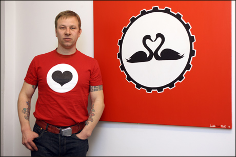

Ludek Pesek Pachl - freischaffender Maler
Kunst bedeutet für den Maler Ludek Pesek Pachl absolute Freiheit.
Getreu seinem Motto Ich male, wann ich will, womit ich will, wo ich
will und was ich will, bezeichnet der tschechische Künstler seine
Kunst als Rebel Art. Die Bilder im Poster-Pop-Stil sind wegen ihrer
farbenfreudigen Gestaltung nicht nur dekorativ, sie geben dem
Betrachter genügend Freiraum zum Nachdenken.
Für seine Bilder lässt sich Ludek gern von visuellen Medien, vor allem
von Fernsehen und Film, inspirieren. Experimentierfreudig und
unbefangen spielt er mit realen wie fiktiven Symbolen, Figuren,
Personen, Geschichten, die in den Medien gezeigt werden. Ironische
Absichten sind oft nicht zu übersehen. Beim Malen, bevorzugt mit
Acrylfarbe, zeigt Ludek große Ausdauer und Genauigkeit. Alle Details,
ob winzig oder hundertmal, bringt er geduldig mit Hand und Pinsel
sorgfältig auf seine Bilder. Kultverdächtig sind vor allem die Bilder,
die an die amerikanische Poster-Pop-Art angelehnt sind.
Wie sein tschechischer Lieblingsmaler Josef Lada, der in den zwanziger
Jahren den Soldat Schwejk illustrierte, brachte sich Ludek das Malen
selbst bei. In Bewunderung für dessen Arbeit ließ sich Ludek ein Motiv
Ladas auf seinen Rücken tätowieren. Das Motiv ist eine Kneipenschlacht.
Geboren wurde Ludek 1971 in Stary Most, heute Most, in der ehemaligen
Tschechoslowakei. Obwohl die Lehrer sagten, dass er sehr begabt sei,
wurde ihm keine künstlerische Ausbildung ermöglicht. Er besuchte als
Schüler in seiner Freizeit gelegentlich einen Malzirkel. Als der
Jugendliche seine erste offizielle Auszeichnung für
seine Bilder erhalten sollte, verweigerte er deren Annahme. Es
handelte sich um einen Preis der Regierung, deren Politik er aus
vielen Gründen ablehnte. Von da an war sein Leben von staatlichen
Schikanierungen geprägt.
Der Zusammenbruch des kommunistischen Regimes, das ihn als Punk
unterdrückt hatte, brachte ihm die lang ersehnte Freiheit. Mit
achtzehn Jahren begann er Europa zu erkunden. Er reiste nach Italien,
Spanien, Frankreich, in die Niederlande. Am längsten, etwa drei Jahre
lang, lebte er in Neapel und Süditalien, weil ihm das warme Klima dort
so gut gefiel. Er schlief am Strand und in verlassenen Häusern. In
Neapel besetzten er und seine Freunde ein verlassenes Kino. Dort
veranstalteten sie Partys und spielten Theater.
Durch Zufall verschlug es Ludek im Winter 1998 nach Berlin.
Ich war sofort Feuer und Flamme, denn ich war bereits im Sommer ein
paar Tage in Berlin gewesen, und die Stadt hatte mich verzaubert.
Und ich bin, bis auf ein paar Unterbrechungen, bis heute geblieben.
In Berlin zu leben empfindet er als Vorteil, weil alles offener und
toleranter sei als in anderen Städten. Berlin findet er super, da es
viele Gesichter habe. Vor allem zwei, nämlich Ost und West. Berlin ist
auf jeden Fall eine Weltstadt. Sie gibt jungen Menschen eine Chance
und ist nicht so konservativ wie Prag oder Wien. Berlin ist überhaupt
eine besondere Stadt, sie hat zwei Zentren und das ist auf der Welt
einmalig.
Im Bezirk Prenzlauer Berg wohnt Ludek und dort befindet sich auch sein
Atelier. Wenn er im Sommer durch seinen Kiez läuft ist er leicht an
seinen Lieblingsklamotten, kompletten Fußballoutfits, zu erkennen.
Dabei spielt Ludek gar nicht Fußball. Als Tscheche ist er
selbstverständlich Eishockeyfan. Neben seinem malerischen Talent
ist Ludek ein guter Koch. Wer Glück hat von ihm zu seiner
selbstgemachten Pizza eingeladen zu werden, dem serviert er eine
leckere, knusprige, dünne Pizza mit Belägen nach Wunsch, genauso wie
er es vor Jahren in Italien gelernt hat.
Sein Lebensmotto hat Ludek bereits gefunden. Genieße das Leben,
solange es geht. Und solange du genug Energie dafür hast. Bei uns sagt
man: Und es wird noch schlimmer kommen! Ich bin zufrieden hier. Die
Welt ist für alle da. Er denkt positiv und diese Einstellung überträgt
sich auch auf sein Schaffen. Ich liebe die Kunst. Weil sie absolute
Freiheit bedeutet und niemand dir was hereinzureden hat.
(text Tanka Ticker, photo Robert Sedmik)
Ludek Pesek Pachl, whose real name is Ludek Pachl, was born in 1971 in the
historic city of Most (which was largely destroyed by the Communist regime
in the 1970s) in Northern Bohemia. He lives the life of a punk. Since his
early years, Pachl had therefore been exposed to frequent harassment by
the former Communist regime. This is one of the main reasons, why he
leaves Czechoslovakia after the fall of the regime and travels through
Europe.
In 1989, Pachl graduated from Bratislava art school with Prof. Indigo
(which felt and predicted L.P.P.'s unprecedented artistic inclinations).
Shortly afterwards, Pachl is taking private lessons with Prof. Ikebara in
Prague - where he already starts off his own Rebel Art career. In winter
1989 he starts working part-time in a rock club called "Docela malé
divadlo" (Quite small theatre) in the city of Litvínov where he is
painting big eye catchers and posters for various cultural events and
begins to make a living out of his occasional painting.
1990: first longer trip to Naples - unfortunately ended for lack of
finances in Rome. Still working part-time at the rock club.
1991: Another several months of travelling through Western Europe
(Germany, Belgium, Netherlands, France, Spain). Still making a living of
his part-time job at the rock club and occasionally painting.
1992: Two weeks trip to the Naples area which is eventually extended to
three years. Occasional travelling through Europe - stays in Barcelona,
Lisbon, Bordeaux, Amsterdam, etc.
1995: First solo exhibition in Vtelno close to his home town of Most.
1995: Moved from Most to Teplice where he takes part in performances with
the theatre group "Vyzvejkla Bambule".
1997: Trip to Naples - stopped and returned after several failed border
crossing attempts.
1997: Offer to travel to Berlin for a couple of days (the trip lasted
until today). Yet he still travels, e.g. to the USA (Hawaii 2007), Czech
Republic, Latvia, Italy, Spain.
Since 2000, Pachl has regular exhibitions in Berlin, Prague and other
cities (for more see
exhibitions)
Since 2006, he is regularly visiting Prague where he found a second home.
(photo by Robert Sedmik)